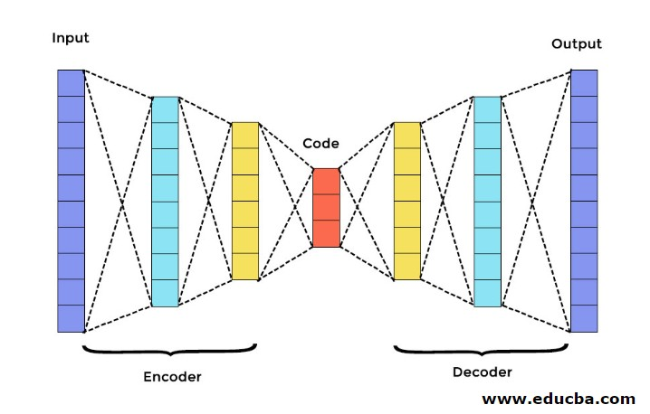
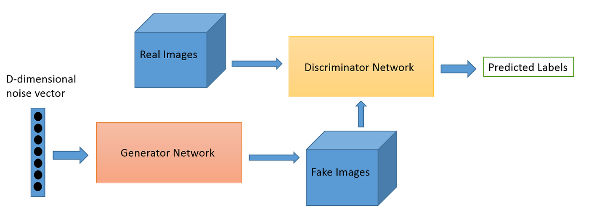

Could you tell what's real?
AutoEncoder is a type of unsupervised learning algorithm in deep learning. It consists of an Encoder and a Decoder, performing compression and decompression to maintain meaningful data.
Applications: Data compression, feature extraction, and generation models. AutoEncoders optimize models without labels, making them widely applicable for exploring data structures, resource savings, and generating new data.
GAN is a deep learning technique comprising Discriminating Network and Generative Network. Through adversarial learning, these networks generate and detect data. This approach significantly reduces data requirements, allowing machines to find correlations without manual classification, saving manpower costs.
Visual Analysis: Deep learning models like CNN (e.g., Intel FakeCatche) face challenges such as variable features, filters, and low image quality.
Audio Analysis: Deep learning sound models like RNN (e.g., Google WaveNet) face challenges like voice changers, background noise, and highly realistic synthetic voices.
Digital Verification: Techniques like blockchain upload and digital signatures (e.g., Livepeer) face challenges related to data privacy laws and local regulations.
Case 1: Phone Scam
In Florida, investor Clive Kabatznik's voice was deepfaked in an attempt to trick a bank into transferring funds. The scam was unsuccessful.
Case 2: Video Fraud
Criminals used deepfake technology to create fraudulent investment videos, impersonating figures like Tsai Ing-wen and Elon Musk.
Can you identify deepfakes? Take the quiz and find out!
Watch the video below to learn more about deepfake fraud cases.